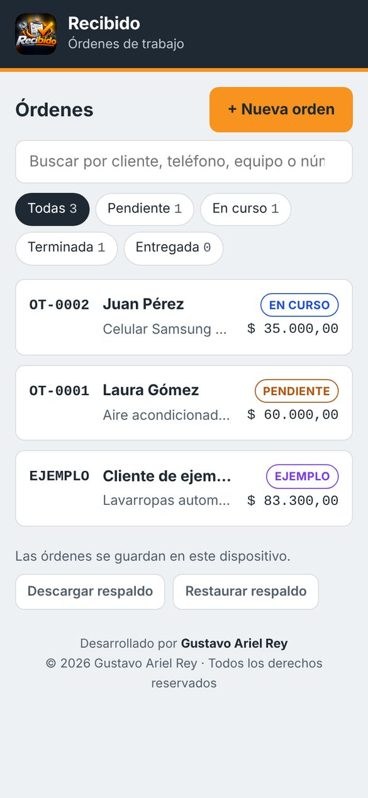
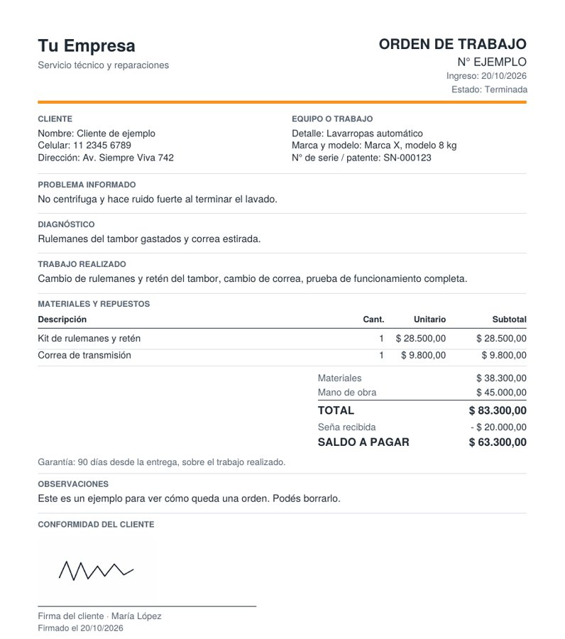
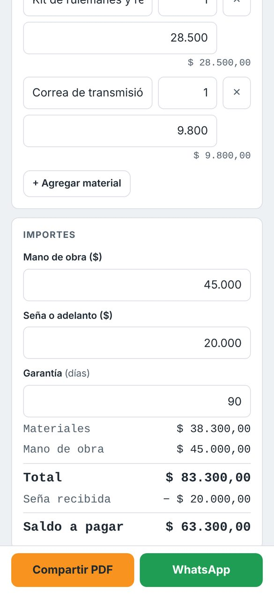

Para talleres, servicio técnico y oficios: órdenes numeradas con fotos, seña y saldo, firma del cliente en pantalla y un PDF prolijo para mandar por WhatsApp.

En un taller o servicio técnico entran muchos trabajos, y casi siempre se anotan en papelitos o en un cuaderno.
Recibido es una app de órdenes de trabajo para talleres, servicio técnico y oficios: cada equipo o trabajo que recibís queda registrado en una orden numerada, con fotos, firma del cliente y un PDF prolijo para mandar por WhatsApp. Datos del cliente, equipo, problema, diagnóstico, materiales, mano de obra, seña y saldo, todo en un solo lugar.
Capturas reales de la app.


Cada trabajo tiene su número propio, con fecha de ingreso y de entrega.
Nombre, celular y dirección, para ubicarlo y escribirle con un toque.
Qué se repara o qué trabajo es, marca y modelo, y número de serie o patente.
Lo que informa el cliente, el diagnóstico y el trabajo realizado, cada cosa en su lugar.
Repuestos y materiales con cantidad y precio, más la mano de obra. La app suma todo.
Anotás la seña o el adelanto y la app muestra cuánto falta cobrar.
Días de garantía por trabajo, que aparecen en el PDF.
Fotos de cómo llegó el equipo y de cómo quedó, para evitar discusiones.
El cliente firma con el dedo en la pantalla, con su aclaración, como conformidad.
Con el nombre y el logo del negocio, los datos, el detalle, los importes, las fotos y la firma. Se comparte por WhatsApp o se guarda.
Un resumen de la orden listo para mandar al cliente.
Pendiente, En curso, Terminada y Entregada, con filtros para ver qué hay en cada uno.
Encontrás cualquier orden por cliente, teléfono, equipo o número.
Descargás una copia de todas las órdenes y la restaurás en otro equipo.
Una vez instalada, se usa aunque no haya internet.
Sí. Se instala desde el navegador del teléfono, sin pasar por la tienda de aplicaciones.
Solo para entrar la primera vez. Después funciona sin señal.
No. Recibe el PDF o el mensaje por WhatsApp y lo abre como cualquier archivo.
Sí. La versión para tu negocio lleva tu nombre, tu logo, tus colores y tu propia numeración de órdenes.
Sí. Por ejemplo, para un servicio técnico de celulares se pueden agregar el IMEI, la clave de desbloqueo y los accesorios que deja el cliente.
Quedan guardados. Cuando tengas tu versión, seguís donde estabas.
No. Los datos quedan en tu teléfono. Con el respaldo te llevás una copia a donde quieras.
Abrila desde el celular, dejá tu nombre y tu WhatsApp, y empezá a usarla. Si te sirve, la seguís usando con todos tus datos.